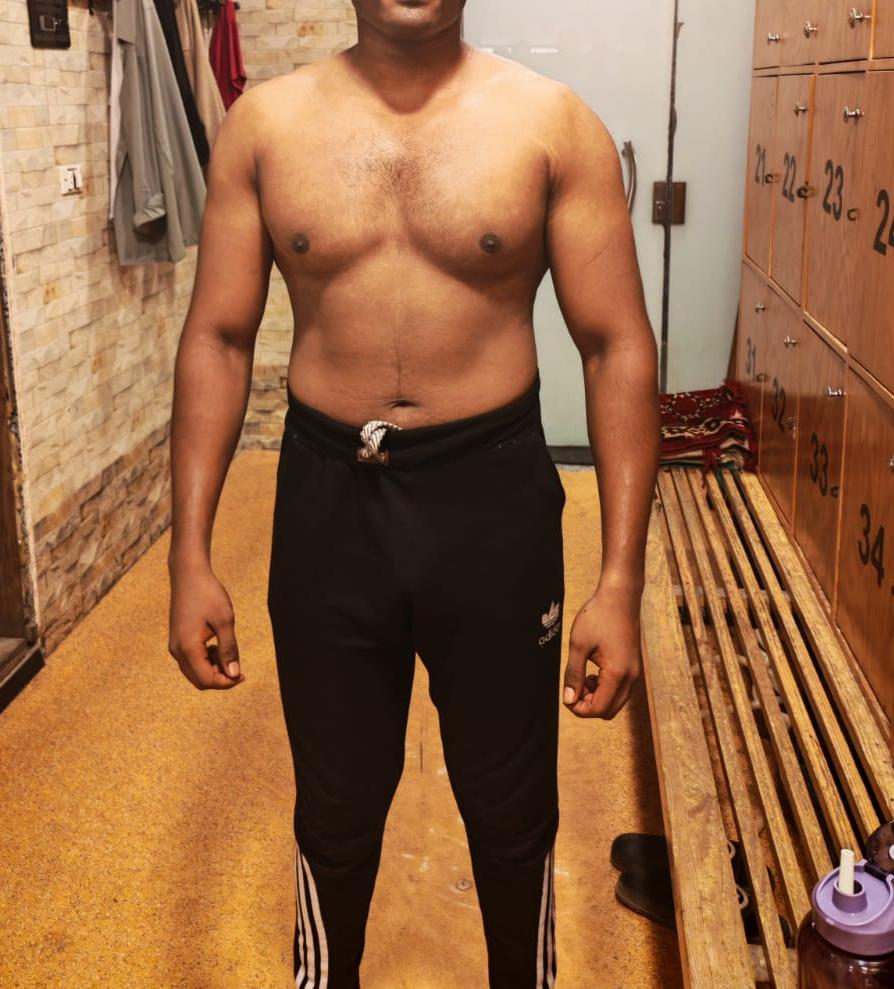
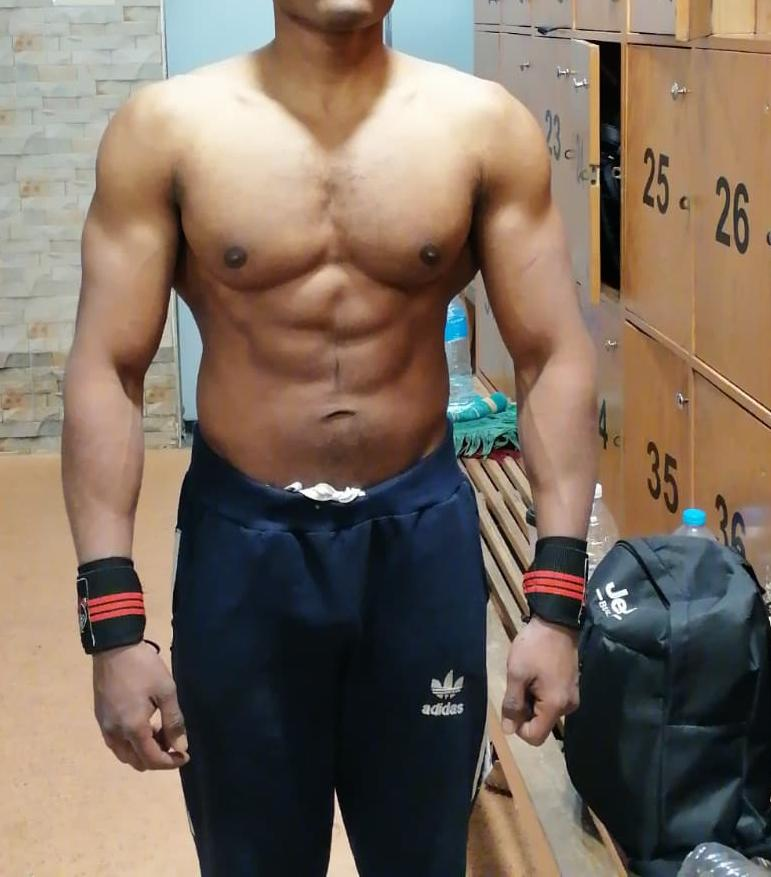
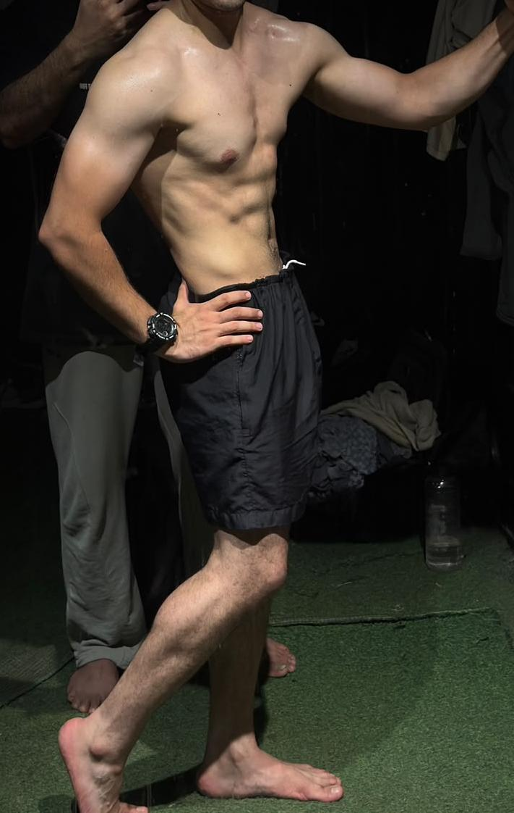

قصص التحول – MFT Medical Fitness Transformation
قصص نجاح حقيقية
مجموعة من قصص التحول لعملاء MFT، حيث كل صورة توثّق قبل وبعد رحلة تدريبية وغذائية مكتملة، بإشراف د. محمد الريس وفريق MFT. نتائج حقيقية جاءت من خلال الالتزام بالخطة، المتابعة المستمرة، والتعديل المستمر وفق احتياجات كل حالة وعلى فترات مختلفة.
-
BEFORE
AFTER

 Muscle Building
Muscle Buildingزيادة الكتلة والبناء العضلي
تطوير الكتلة العضلية وإبراز تفاصيل الذراعين والكتفين والصدر مع تحسين التناسق العام للجسم.
-
BEFORE
AFTER

 Fat Loss
Fat Lossخسارة دهون وتحسين شكل الجسم
خطة غذائية وتدريبية ساعدت على خفض الدهون وتحسين تناسق الجسم خلال فترة قصيرة.
-
BEFORE
AFTER

 Body Recomp
Body Recompإعادة تركيب الجسم
خفض الدهون مع الحفاظ على الكتلة العضلية للوصول إلى جسم أكثر تناسقًا وتحديدًا.
-
BEFORE
AFTER

 Muscle Building
Muscle Buildingبناء العضلات وإبراز الظهر
برنامج مقاومة وتغذية موجّه لزيادة الكتلة العضلية وتحسين شكل الظهر والكتفين.
-
BEFORE
AFTER

 Strength & Definition
Strength & Definitionخفض دهون وتحديد عضلي
تطوير القوة وخفض الدهون مع إبراز عضلات الظهر والكتفين والوصول إلى مظهر أكثر تحديدًا.
-
BEFORE
AFTER


Fat Lossخفض الدهون وإبراز العضلات
تقليل الدهون وتحسين شكل البطن والصدر والكتفين مع الحفاظ على مظهر رياضي متناسق.
-
BEFORE
AFTER

Fat Lossتحول واضح في نسبة الدهون
خفض الدهون وتحسين تناسق الجسم مع الحفاظ على شكل رياضي وعضلات أكثر وضوحًا.
النتائج المعروضة فردية وتختلف من شخص لآخر حسب الحالة الصحية والالتزام بالخطة ونمط الحياة، ولا تُعد وعدًا بنتيجة مماثلة.
احجز استشارتك